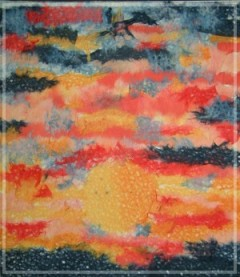

思念遙寄天空裡 雅萍姐姐
關於lily…我覺得自已有些遺憾…沒有在星期六時去看她…
星期日去的時候，兩樓的加護病房我都去找過了，可是都沒看到lily的名字
覺得不太好的感覺…眼看開放的時間到了，卻不知lily在哪間病房…
後來，下去再問問看。最後是批價的護士告訴我的，她說lily在早上的時候走了…
因為我有試著打妳的手機，可是關機中。有點急…
後來跟媽媽又下去太平間找找看，妳是否在哪辦什麼手續的…詢問後才知道已經帶走了。
剛開始，真的很想哭…因為沒有趕上看lily一面………
後來想想…這樣一來lily就不會再痛了呀…她就沒有痛的到上帝身旁，當個快樂的小天使了呀！
雖然我只和她相處二、三年…雖然我只看過生病後的lily…可是我知道、也了解到lily是怎樣的一個小朋友…她很乖…很乖…很有主見、很體貼…皮一點點…（哪個小朋友不皮的嘛…這才是小孩子的天真呀！）她真的很好溝通、很好交心…即使她只是個小孩子…比大人還好交心、溝通的…可能也因為生病，所以lily早熟…不管如何…她真的很可愛不是嗎？我真的好喜歡她哦！
我不難過了…因為一想到她不會再痛了，心中就很放心。至少我認識她快三年了呀！她的可愛、調皮、認真、善良…我都經看過了呀！…
雅萍 91-08-19
|
 |
•棉紙拼貼夕陽 十二月冬天，在病房裡，看到窗外美美的夕陽，就用棉紙撕貼出一幅絢麗細緻的畫，大自然的驚嘆神奇就這麼捕捉到了！ |